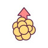

Dyslipidemia
درصورت بالا بودن LDL :
1.Tab Atorvastatin 20mg N=100 q12h
Or Rosuvastatin 10mg N=60 qd
در صورت بالا بودن TG :
1.Tab Gemfibrozil 300mg N=100 q12h
Or Tab Fenofibrate 100mg N=60 daily
درصورت بالا بودن LDL & TG:
1.Tab Nicotinic acid 100mg N=130
هفته اول q8h یک قرص* هفته دوم q8h دو قرص *هفته سوم q8h سه قرص
نکته1: شروع درمان LDL>190 است و برای بیماران دیابتی و قلبی LDL>100
نکته2: بعد از3ماه لیپیدپروفایل بررسی کنید.
نکته3: عوارض میوزیت ناشی از آتوروستاتین به بیمار توضیح بدید.
A Group : Nicotinic acid
C Group : Gemfibrozil, Fenofibrate
X Group : Atorvastatin, Rosuvastatin
1️⃣ obstructive liver disease or biliary obstruction
2️⃣ هایپوتیروئیدیسم
3️⃣ دیابت
4️⃣ سندرم نفروتیک
chronic renal insufficiency 5️⃣
6️⃣ anorexia
7️⃣ چاقی
8️⃣ سندرم متابولیک
9️⃣ الکلیسم
🔟 سیگار
1️⃣1️⃣ دارو ها مثل کورتون
تصویری برای این نسخه موجود نیست.